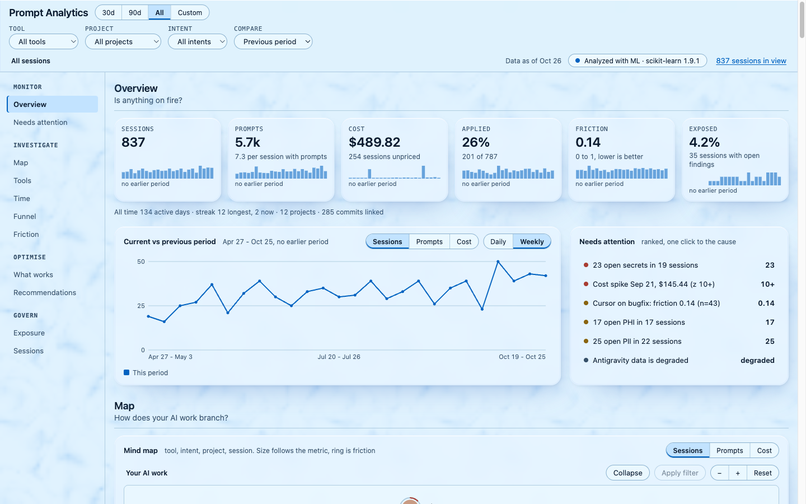
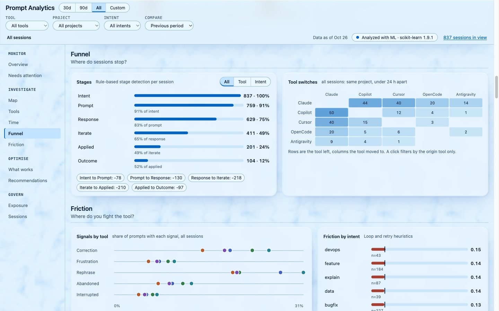
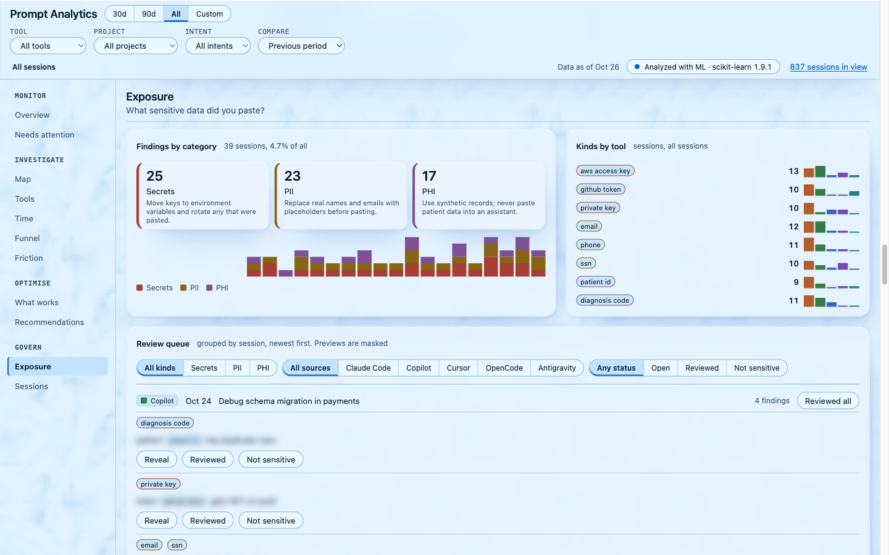
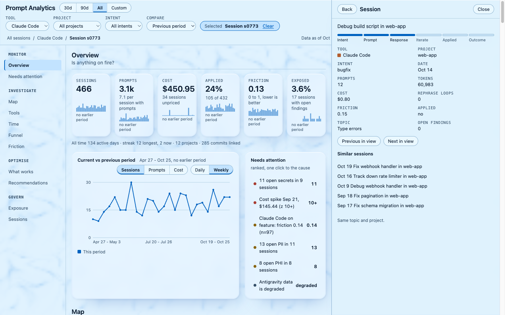

Prompt Analytics
Where do your AI coding hours go?
One local dashboard over your prompt history from Claude Code, Copilot, Cursor, Antigravity and opencode: usage, cost, where prompts stall, and what sensitive text slipped into them. Nothing leaves your machine.
Video transcript (42 s, no audio, mock data)
- Where do your AI coding hours go? Your prompts are scattered across five assistants.
- Claude Code, Copilot, Cursor, Antigravity and opencode converge into one local view.
- Sessions, prompts, tokens and estimated cost count up, with deltas.
- A calendar heatmap of 164 active days ripples out, with spend by tool.
- A funnel shows where prompts stall; friction rates show corrections and retries.
- Secrets and PII are found and masked, redacted before anything is stored.
- Click any bar or cluster to drill into the prompts behind it.
- Run
uvx prompt-analytics run.
Demo footage and screenshots use a synthetic profile with made-up projects. No real sessions.
Quickstart
uvx prompt-analytics runReads your local session files, builds a DuckDB store, and opens the dashboard on 127.0.0.1.
Privacy model
Local only
Everything runs on 127.0.0.1. There is no upload, no telemetry and no account.
Redact first
Secrets and PII are masked before anything is stored. Findings keep counts and a masked preview.
Reveal on demand
Original text is re-read from your own session file only when you ask, behind a per-run token.
What you see



